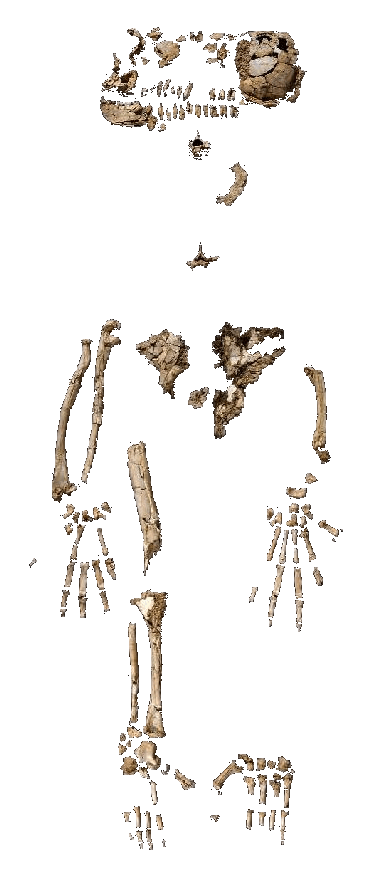
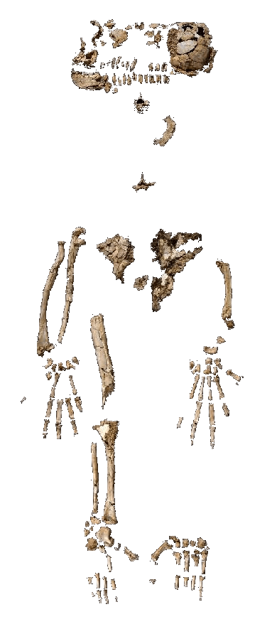

Homo heidelbergensis evolved independently in Europe and Africa. From the European population, 200 thousand years ago, a new advanced human species emerged — Neanderthals. Neanderthals are not our ancestors but a parallel branch of the evolutionary tree.
Judging by skull structure and genes, Neanderthals could speak. They wore clothes, used fire, cared for the elderly, and buried the dead — they were hardly less developed than early Homo sapiens.
Homo sapiens appeared in Africa. These are people with the same body and brain as ours, our direct ancestors. The oldest remains were found in southeastern Ethiopia, and they are 195 thousand years old.
46 thousand years ago Homo sapiens arrived in Europe. Soon the native inhabitants — Neanderthals — lost the competitive struggle and became extinct.


 
